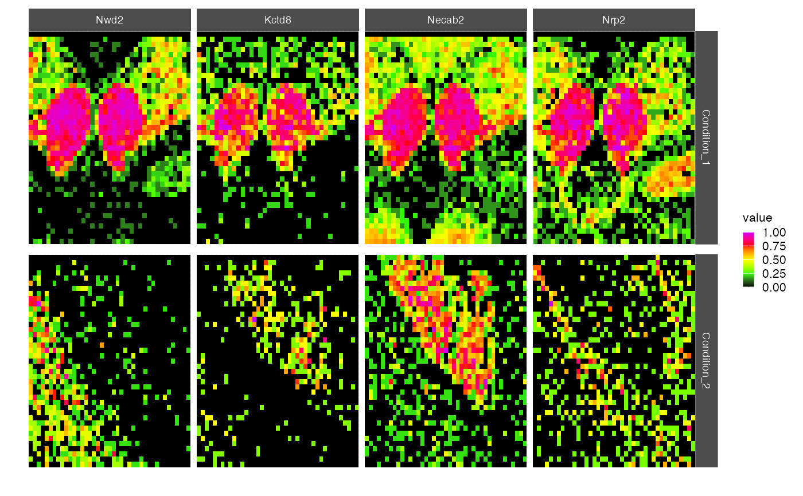
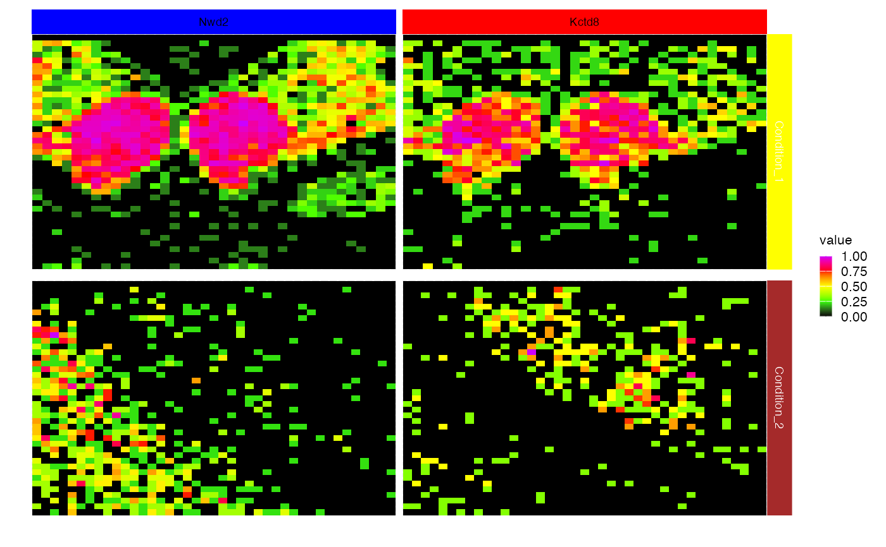

This function compares and visualizes multiple spatial images obtained from STGrid objects. It displays a color-coded representation of the feature (e.g., molecules) density observed in spatial transcriptomics experiments for different conditions.
cmp_images(
...,
feat_list = NULL,
names = NULL,
colors = c("black", "#33FF00", "#FFFF00", "#FF0000", "#CC00FF"),
saturation = 1,
coord_fixed = TRUE,
scale = TRUE,
logb = 10,
color_x_strip = NULL,
color_y_strip = NULL,
color_strip_text_x = "white",
color_strip_text_y = "white",
pseudo_count = 1,
condition_vs_feat = TRUE
)STGrid objects to be compared.
A list of features for which the spatial images will be created.
Names for the conditions or experiments. Defaults to NULL.
The colors to use for gradient fill in the spatial images. Defaults to viridis::inferno(10).
The ceiling level for the feature expression values. Defaults to 1 (no ceiling).
Logical value indicating whether to keep the aspect ratio fixed. Defaults to TRUE.
Logical value indicating whether to scale the feature expression values. Defaults to TRUE.
The basis for the log transformation. Default to 10. If NULL, no log transformation.
Strip colors (x axis). If not Null must also set color_y_strip.
Strip colors (y axis). If not Null must also set color_x_strip.
Strip text colors (x axis).
Strip text colors (y axis).
A value for the pseudo count used for log transformation (default to 1).
Logical indicating whether to facet by condition vs. feature (TRUE) or by feature vs. condition (FALSE). Defaults to TRUE.
example_dataset()
#> |-- INFO : Dataset 11284233/files/Xenium_Mouse_Brain_Coronal_7g was already loaded.
xen <- Xenium_Mouse_Brain_Coronal_7g
x_bins <- bin_x(xen)[181:nbin_x(xen)]
y_bins <- bin_y(xen)[101:nbin_y(xen)]
xen_1 <- xen[x_bins, y_bins]
x_bins <- bin_x(xen)[61:101]
y_bins <- bin_y(xen)[101:nbin_y(xen)]
xen_2 <- xen[x_bins, y_bins]
cmp_images(xen_1, xen_2, feat_list = c("Nwd2", "Kctd8", "Necab2", "Nrp2"))

cmp_images(xen_1, xen_2, feat_list = c("Nwd2", "Kctd8"), color_x_strip=c("blue", "red"),
color_y_strip=c("yellow", "brown"), color_strip_text_x="black", color_strip_text_y="white")
#> |-- INFO : Strip colors were provided.
#> |-- INFO : Preparing colored strips.
